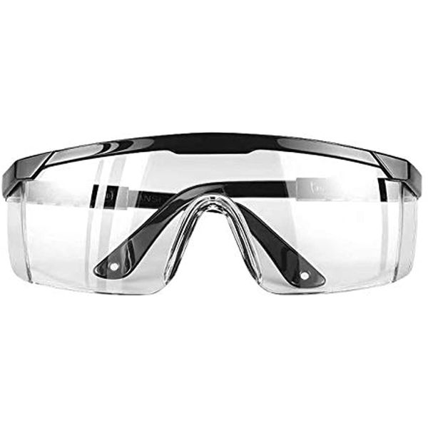
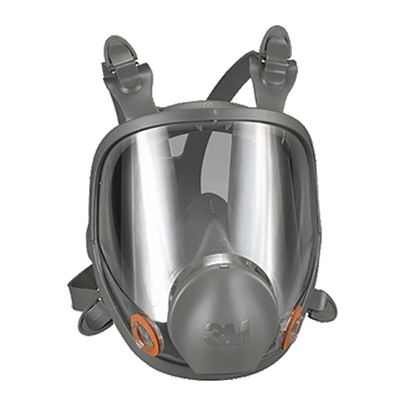

Selamat Datang 👋
Media pembelajaran ini dikembangkan sebagai bagian dari penelitian Research and Development (R&D) dengan judul:
Pengembangan Media Pembelajaran Berbasis Website pada Materi K3 bagi Siswa Teknik Pemesinan SMK Negeri 2 Medan
Menu Pembelajaran
Pilih menu di bawah untuk memulai pembelajaran K3 secara terstruktur.
Tentang Media
Media ini berisi materi Keselamatan dan Kesehatan Kerja (K3) yang mencakup pengertian K3, tujuan dan manfaat, bahaya & risiko kerja, APD, rambu-rambu K3, serta penerapan K3 di bengkel pemesinan (mesin bubut, frais, bor, dan gerinda).
Silakan mulai dari menu Petunjuk Penggunaan, lanjut ke Tujuan Pembelajaran, kemudian pelajari Materi K3 secara berurutan.
- Materi lengkap & terstruktur
- Video pembelajaran pendukung
- Latihan & kuis interaktif
- Hasil penilaian otomatis

Galeri Alat Pelindung Diri (APD)
Kenali APD wajib sebelum praktik di bengkel pemesinan.

Kacamata Pelindung
Masker Sarung Tangan
Sarung Tangan
 Sepatu Safety
Sepatu Safety
Siap Memulai Pembelajaran?
Pelajari materi K3 secara bertahap, kerjakan latihan & kuis, lalu lihat hasil Anda!